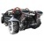

Themes in Opera 18+
Due to the major architecture changes we've been going through recently, the first versions of our Chromium/Blink based Opera browser (versions 15, 16 and 17) do not support themes. However, from Opera 18 onward, themes are supported again! This article explains you how to create themes for Opera 18+.
How to
In short, the steps to create a theme are as follows:
- Find two images you want to use and place them in a folder — I found two nice ones on Unsplash
- Create a persona.ini file with your text editor, and add the necessary meta data
- Compress/archive the content of the folder as a zip file
- Test if the theme works by dragging it to opera:themes
- Upload the theme to our addons catalog
I've created a test theme for you to play with. Just download and unzip it to inspect what's inside. You find extensive details in the following sections.

Images
You'll need to pick two images: one will function as the background for Speed Dial, the other one as background for pages like opera:extensions, opera:settings, opera:about, etc.
Make sure the images you use are of sufficient size and quality as they'll need to be rescaled to fit on different screen resolutions. In order to reduce file size as much as possible without sacrificing quality, run your images through a tool like ImageOptim, which shaves off unnecessary bytes from PNG and JPG files.
Persona.ini details
The content of the persona.ini file is as follows:
[Info]
Name = Yellow SF
Author = Andreas Bovens
Author URL = http://bovens.net/
Version = 2
[Start Page]
Background = 01.jpg
Position = center bottom
Title Text Color = #ffffff
Title Text Shadow = #261712
[Web UI Pages]
Background = 02.jpg
Position = center top
; images by Charlie Foster, found on http://unsplash.com
This should be quite self explanatory, but just in case, here are the details line per line:
- [Info]: info section
- Name: Title of the theme
- Author: Author name
- Author URL: A URI that points to the author's home page or e-mail. Valid schemes are http, https, and mailto
- Version: Version 2 indicates Opera 18+ themes
- [Start Page]: section with settings for Speed Dial
- Background: File name of the image that goes behind Speed Dial.
- Position: Position of the start page image — optional, any CSS keyword for position: left, top, right, bottom, center.
- Title Text Color: Color of the text — optional, HEX notation, without alpha
- Title Text Shadow: Color of the text shadow — optional. If set. will be applied as text-shadow: 1px 1px 1px 'Title Text Shadow value'
- [Web UI Pages]: section with settings for opera:settings, opera:about, etc.
- Background: File name of the image that goes behind other pages
- Position: See above for positioning details
In the end I've added a comment. You can put comments anywhere you like in the file, as long as they are on a separate line and start with a semicolon (;). You can do this for instance to give attribution to the photographer or designer who made the background images.
Compression, testing and upload
Make sure there are no unnecessary files inside the zip file, like source files for graphics, .git folders or .DS_Store files, for instance.
To test the theme, load opera:themes in the browser, and drag and drop the ZIP file onto the opera:themes page. If everything is right, the theme will be installed in the Themes Manager's My Themes section.
To upload the theme, log into the Opera Add-ons catalog, go to My uploads, and submit your theme.
Previous theme format and legacy features
Themes made for Opera 12 and 12.1 also work in Opera 18+, but not all features have a visual effect. The theme will not expand under the tabs for instance, and settings like "Tint Color" are no longer supported.
Summary
As you can see, making themes for Opera is very easy. Try it out for yourself!
Andreas Bovens

Andreas is based in Oslo, where he works for Opera Software as Extensions Product Manager + Developer Relations.
This article is licensed under a Creative Commons Attribution 3.0 Unported license.
Comments
-

Just out of curiosity, when are we going to get regular old favorites back? Stash is an intriguing idea, however in practice it is a nightmare for large collections of favorite sites. Speed dial is only useful to store up to a certain number of favorite sites before it too becomes unmanageable (or simply insufficient). We really, REALLY NEED a standard hierarchical favorites feature. Please, before working on more glitter and gloss, it would be very helpful to have the old classic Opera 12 favorites feature back.
-

Seems to me Opera is trying to make a come back, but will you plz bring back other Opera 12 features like BOOKMARKS and also things like notes and the panel.
-
Would you consider adding a ”Repeat = …“ directive resembling the CSS ”background-repeat“ property? That should neither add severely to Persona-v2's complexity™, not to the implementation (as that is WebUI, anyway). But such a featurette would be very useful to provide pattern backgrounds (think of the vast spectrum of screen sizes Opera Desktop runs on), saving memory and rendering time not having to scale. Plus, it wouldn't let v1-themes using tiling silently fail on new Opera.
-

Can we use WebP Images?
-

XenoAntares: I'll inquire.
-

So a 'theme' is nothing more than a picture?
-

Andreas, I did the walkthrough however the message "An invalid version number found on your persona.ini file. Please use version '1 'for this kind of theme." I can not understand what's going on, could help?
-
@QuHno: Note that lossy PNG can sometimes give surprising results as well.
-

> Make sure there are no unnecessary files inside the zip file, like source files for graphics, .git folders or .DS_Store files, for instance.
-

there is some sort of bug in persona.ini
-

Christian, thanks for the catch! Fixed with YemuZip http://www.yellowmug.com/yemuzip/
No new comments accepted.jrista
Saturday, November 2, 2013
destinthegreat
Sunday, November 10, 2013
XenoAntares
Tuesday, November 19, 2013
QuHno
Tuesday, November 19, 2013
Some images compress better with that than with PNG or JPG, meaning less artifacts, smaller size, better scalability.
I wanted to ask for SVG support too but I think it will take much time to bring Chromium up to the specs before it becomes usable.
Andreas Bovens
Tuesday, November 19, 2013
QuHno: Yes, you can use WebP as well... However, I'm not 100% sure if this has landed in O18 or if it's coming in O19. I'll check up on SVG.
shaneh
Tuesday, November 19, 2013
Why bother having an entire theme catalogue and separated theme support when you can just as easily use Google image search and 'use image as theme'.
David Reis Palhano
Sunday, November 24, 2013
Frans
Thursday, November 28, 2013
Christian Magnus Sinding-Larsen
Friday, December 6, 2013
Your example has a __MACOSX folder, Andreas. I take it is to show what not to do?
vux777
Friday, December 6, 2013
version must be set to 2, otherwise theme wont work
Andreas Bovens
Monday, December 9, 2013